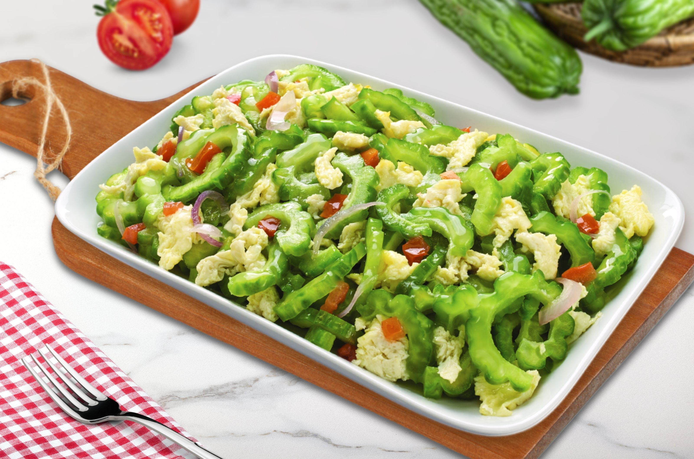

Ampalaya

Description
What we will be cooking today is Ginisang Ampalaya. Ampalaya is bittergourd in English, and ginisa can just be
translated as sautee. So in this recipe, we will be sauteing the ampalaya with egg, onion, garlic and more. This
is Kevin's favorite food since he was a child.
Ingredients
- 1 Ampalaya
- 2 Egg
- 1 Onion
- 3 Garlic
- Tomato
- Ground Black Pepper
- Oil
- Salt
- MSG or Magic Sarap
Directions
- Slice your Ampalaya into two lengthwise halves. Use a spoon to scoop the white part in the middle.
- Now you have to slice your ampalaya crosswise, thinly. Your ampalaya should look somewhat like a crescent
moon.
- This part of is optional. If your Ampalaya is hybrid, you can skip this part. If you have the traditional
ampalaya, then you have to soak it in water with salt for 30 minutes.
- Mince both the onion, garlic and tomato.
- Heat pan and put oil on it, put the onion, garlic on the pan. Saute until the onion are translucent. And
then put the tomato on it.
- Put the Ampalaya on it and and also put a small cup water. Put a lid above the pan.
- Let the water cook the Ampalaya for a couple of minutes. Keep looking to see if the water has evaporated.
- Break the 2 eggs in a small bowl and whisk then away. Then put the egg unto the pan. Saute the egg with the ampalaya.
- Put salt and MSG there for flavor. And then black pepper.
- Serve